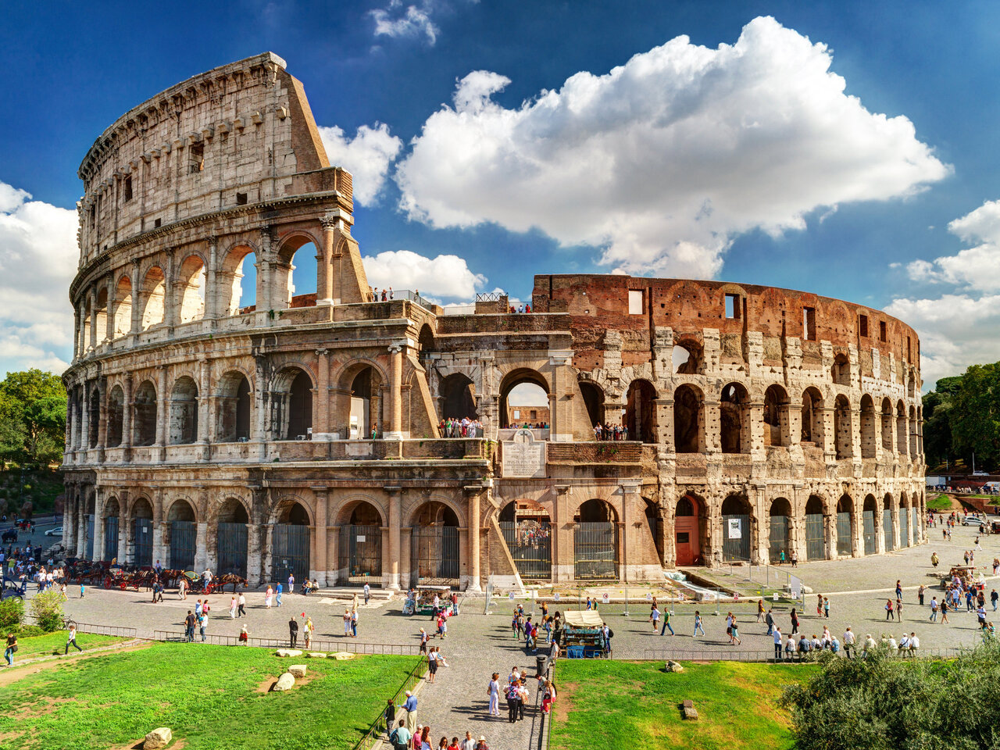

Por que viajar a Roma?
Com uma longa e interessante história nas suas costas, Roma é uma cidade que atrai visitantes de todo o mundo graças aos seus impressionantes monumentos e restos arqueológicos procedentes da Antiguidade. Há infinitas razões para visitar Roma, se apaixonar pela cidade e desejar voltar. A gastronomia e seu animado ambiente são algumas delas.
João G., Cauã, Diandra©
Roma